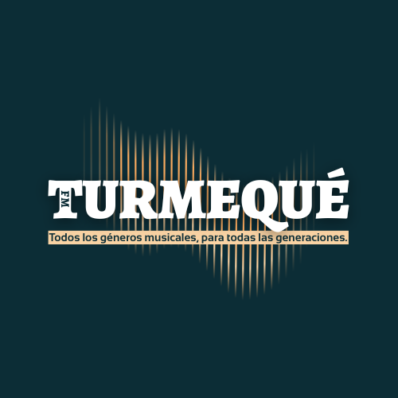

Turmequé FM
Música para todas las generaciones
SISTEMA LISTO
* Si experimenta cortes, pruebe alternar entre nuestros servidores de respaldo:
Música para todas las generaciones
* Si experimenta cortes, pruebe alternar entre nuestros servidores de respaldo: